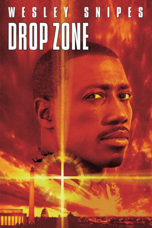
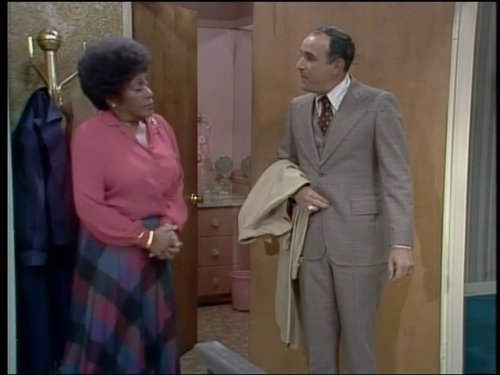
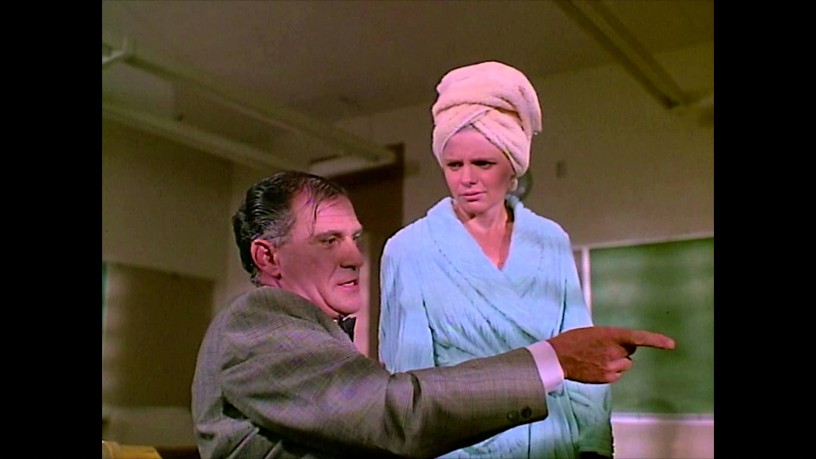

#5745 Drop Zone
 
 IMDB-Wertung: 5.6 / 10
IMDB-Wertung: 5.6 / 10  Tomatometer: 41
Tomatometer: 41  Metascore: 0
Metascore: 0 
Der U.S. Marshal Pete Nessip begleitet einen Gefangentransport, bei dem der Hacker Leedy in ein Gefängnis überbracht werden soll. Plötzlich wird ein Loch in das Flugzeug gerissen, und durch den starken Sog wird Leedy zusammen mit Nessips Bruder in die Tiefe gesaugt. Nessip wird für den Vorfall verantwortlich gemacht und suspendiert. Doch er glaubt nicht daran, dass Leedy umgekommen ist. Er ermittelt auf eigene Faust und die Spur führt schnell zu Fallschirmspringern…
Jahr: 1994
Dauer: 101 Minuten
FSK: 16
Land: USA Studio: Paramount PicturesTonspuren: DD5.1 - ,
Untertitel:
Auflösung: 1080p (1920x800) Größe: 8458 MB
Genre: Action, Thriller, Abenteuer
Regisseur: John Badham
Drehbuch: Jeff Baena
Soundtrack:
Darsteller:
 Wesley Snipes als Pete Nessip
Wesley Snipes als Pete Nessip Gary Busey als Ty Moncrief
Gary Busey als Ty Moncrief- Yancy Butler als Jessie Crossman
 Michael Jeter als Earl Leedy
Michael Jeter als Earl Leedy- Corin Nemec als Selkirk
 Kyle Secor als Swoop
Kyle Secor als Swoop- Luca Bercovici als Jagger
- Malcolm-Jamal Warner als Terry Nessip
 Rex Linn als Bobby
Rex Linn als Bobby Grace Zabriskie als Winona
Grace Zabriskie als Winona Robert LaSardo als Deputy Dog
Robert LaSardo als Deputy Dog Sam Hennings als Torski
Sam Hennings als Torski Mickey Jones als Deuce
Mickey Jones als Deuce Clark Johnson als Bob Covington
Clark Johnson als Bob Covington- Charles Boswell als Glenn Blackstone
 Ed Amatrudo als Detective Fox
Ed Amatrudo als Detective Fox- Melanie Mayron als Mrs. Willins
 Tim Powell als Gordon Maples
Tim Powell als Gordon Maples- Ron Kuhlman als DEA Guard
 Kimberly Scott als Joanne
Kimberly Scott als Joanne- Keith MacKechnie als Night Desk Sergeant
- John Badham als Yacht Captain , uncredited
- Vince Cecere als Special Agent Jones , uncredited
- Anthony Giaimo als Head Jump Official , uncredited
-  Tom Lawrence als Airplane Passanger , uncredited
 Gary Rodriguez als Paramedic , uncredited
Gary Rodriguez als Paramedic , uncredited- Claire Stansfield als Kara
-  Andy Romano als Tom McCracken
- Rick Zieff als Mike Milton
- Natalie Jordan als Lena
- A.J. Ross als Roslund
- Al Israel als Schuster Stephens
- Steve DuMouchel als Walsh Matthews
- J.P. Patrick als Jump Master
- Steve Raulerson als Commander Dejaye
- D.D. Howard als Norma
- Dale Swann als 747 Captain
- Keith Leon Williams als 747 Flight Engineer
- Lexie Bigham als Big Man Passenger
- Jerry Tondo als DEA Guard
- Jan Speck als Flight Attendant #1
- Dana Cox als Paramedic , uncredited
- Sheldon Fogel als The Official , uncredited
- Steve Greenberg als Steve Greenberg, Reporter , uncredited
- Danny Hanemann als Parachutist , uncredited
- Dave Knight als DC Skydiving Finals Attendee , uncredited
Datei: X:\1994\Drop Zone (1994, FSK16, 1920x800).mkv seit 16.03.2017
Festplatte: HD 1992-1995
 Es gibt insgesamt 67 Filme in der Gruppe '1994'
Es gibt insgesamt 67 Filme in der Gruppe '1994'